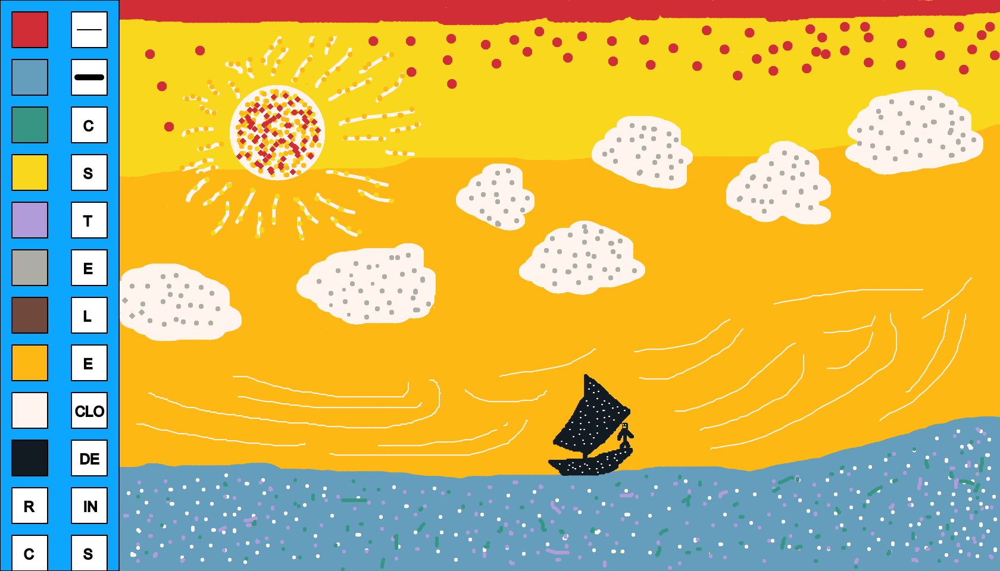

My own fishing experience in the Monterey bay inspired the Fisherman at Sea. This painting depicts a warm sunlit day of a fisherman on a calm and tranquil sea sailing through the vast open ocean with a smile on his face as the wind is in his favor. For this piece, I used my interface and the color style to juxtapose my depiction of the life of a fisherman out on the ocean and I implore you to do the same.
